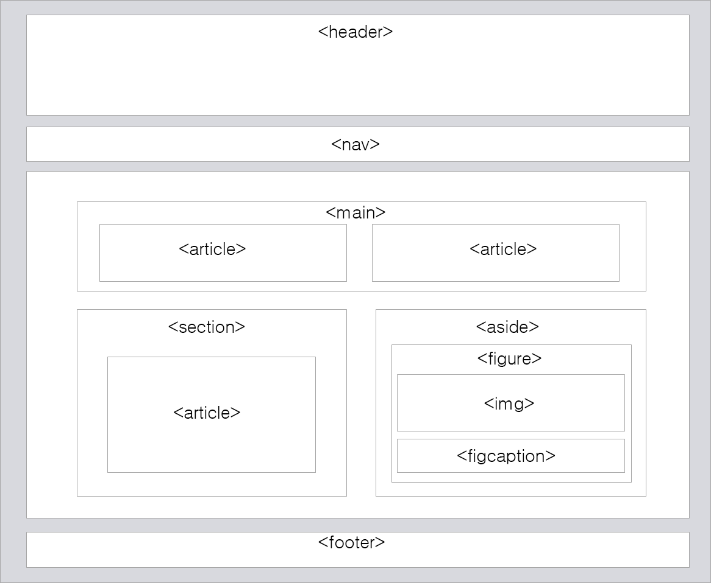

블록과 인라인
- 블록타입의 요소
- 새로운 줄에서 시작하고 한 줄을 통째로 차지하는 요소.
- 인라인 타입의 요소
- 새로운 줄이 아닌 그 자리에서 그 요소 크기만큼의 자리만 차지하는 요소.
div 태그는 블록 타입의 요소>로 여러 태그에 공통적인 스타일을 적용할 때 주로 쓰인다.
반면 span 태그는 인라인 타입 요소로 특정 부분에 다른 스타일을 적용할 때 주로 쓰인다.
iframe 요소
- iframe 요소
- inline frame의 약자로 웹페이지 안에 새로운 웹페이지를 삽입할 때 쓰는 요소.
이걸 누르면 위의 이미지가 바뀜
원래대로
레이아웃
- 레이아웃
-
여러 요소들을 보기 좋게 배치하는 작업.
다음과 같은 방법들을 이용
- div 요소를 이용해 css 스타일을 적용
-
HTML5의 의미요소를 이용해 레이아웃을 구성.

테이블을 이용한 방법